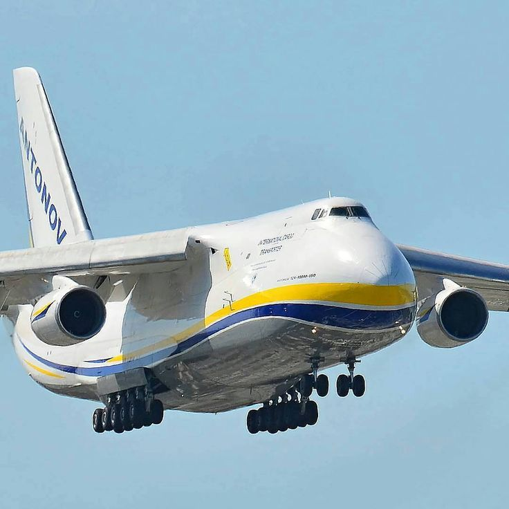
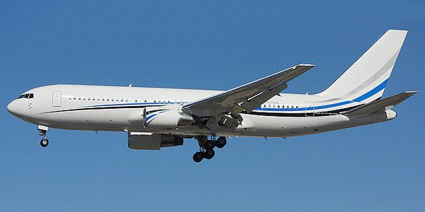

 Boeing 737
Boeing 737
Boeing 737 - семейство узкофюзеляжных ближне-среднемагистральных пассажирских и транспортных самолетов. Самолет производится корпорацией Boeing с 1967 года.
Boeing 737 был разработан для рынка пассажирских самолётов сравнительно малой вместимости и малой дальности. В январе 1967 года первый прототип самолёта Boeing 737 был подготовлен к первому полёту и последующей программе лётных испытаний и сертификации.
Boeing 737 стал самым массовым пассажирским самолётом за всю историю пассажирского авиастроения, 13 марта 2018 года был поставлен десятитысячный самолёт, а более 4500 заказов ещё ожидают исполнения. Boeing 737 эксплуатируется настолько широко, что в любой момент времени в воздухе находится в среднем 1200 самолётов и каждые 5 секунд в мире взлетает и садится один 737-й.
Airbus A320 — семейство среднемагистральных узкофюзеляжных самолётов для авиалиний малой и средней протяжённости, разработанных европейским консорциумом «Airbus S.A.S». Выпущенный в 1988 году, он стал первым массовым пассажирским самолётом, на котором была применена электродистанционная система управления.
Недавно Airbus сместил Boeing с вершины авиационного рейтинга. Общее число произведённых A320 достигло 12 260 штук. Этот показатель позволил Airbus впервые за сорок лет обойти 737-е семейство Boeing — символ массовой гражданской авиации второй половины XX века.
Ту-154 - советский и российский трехдвигательный реактивный пассажирский авиалайнер и транспортный самолет 1-го класса для авиалиниий средней протяженности.
Первый полет Ту-154 был выполнен 3 октября 1968 года. Самолет производился серийно с 1970 по 1998 годы на Куйбышевском авиационном заводе, а темп выпуска достигал пяти единиц в месяц.
Ту-154 - один из самых быстрых в мире серийных пассажирских лайнеров с крейсерной скоростью более 900 км/ч, а также самый массовый советский реактивный пассажирский самолет, который до конца 2000-х годов оставался одним из основных самолетов на маршрутах средней дальности.